Describe your PDE the way you write it.
uPDE handles the rest.
uPDE is an expressive Python library designed to solve systems of coupled nonlinear PDEs. It targets physics-focused users — those who want control of their PDE models without worrying about discretization and time integration.
x = np.linspace(0,1,100) eq = upde.PDE('u', x) eq.add_advection(1.0) eq.add_diffusion(0.01)
def gaussian(x): return np.exp(...) eq.set_ic(gaussian) eq.set_bc(kind='periodic')
sol = eq.solve( t_span=(0, 1) ) # sol.T: (nx, nt)
x = np.linspace(0, 1, 200) eq = PDE('u', x) eq.add_diffusion(diffusivity=lambda u: u**n)
# compact-support Gaussian IC u0 = np.exp(-200 * (x - 0.5)**2) eq.set_ic(u0) eq.set_bc(kind='dirichlet', side='all', value=0)
sol = eq.solve(t_span=(0, 0.1), method='BDF') plt.plot(x, sol.u[:, 0], label=f't=0') plt.plot(x, sol.u[:, -1], label=f't={sol.t[-1]}')
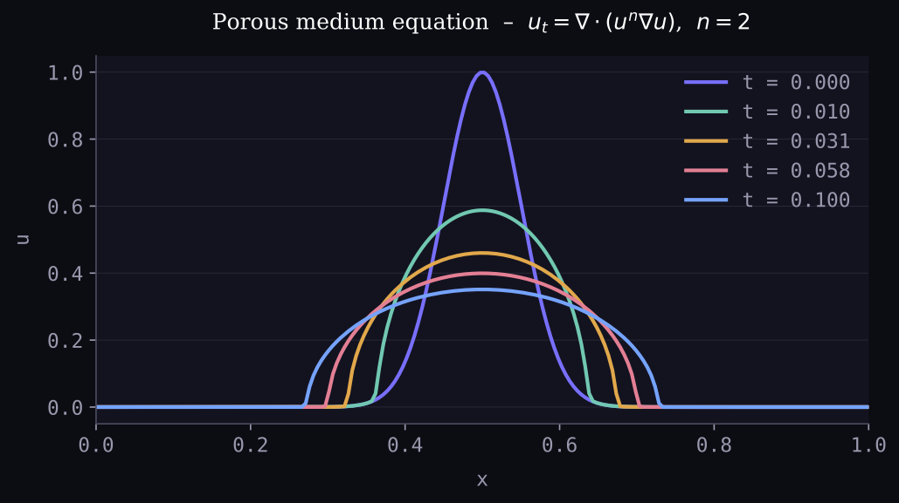
Diffusivity $D(u) = u^n$ vanishes where $u=0$, producing finite-speed propagation and sharp fronts — a hallmark of nonlinear degenerate diffusion. BDF handles the resulting stiffness.
$u = \pi\psi_0\sin^2(\pi x)\sin(2\pi y)$
$v = -\pi\psi_0\sin(2\pi x)\sin^2(\pi y)$
Advection of a scalar by a divergence-free vortex velocity field (Taylor–Green vortex).
nx, ny = 64, 64 x = np.linspace(0, 1, nx); y = np.linspace(0, 1, ny) u = lambda x,y: np.sin(np.pi*x)**2 * np.sin(2*np.pi*y) v = lambda x,y: -np.sin(2*np.pi*x) * np.sin(np.pi*y)**2 eq = PDE('T', x=x, y=y) eq.add_advection(velocity_x=u, velocity_y=v) eq.add_diffusion(diffusivity=1e-4)
T0 = np.zeros((nx, ny)); T0[:, nx//2:] = 1.0 eq.set_ic(T0) eq.set_bc(side='all', kind='neumann', value=0.0)
sol = eq.solve(t_span=(0, 4))
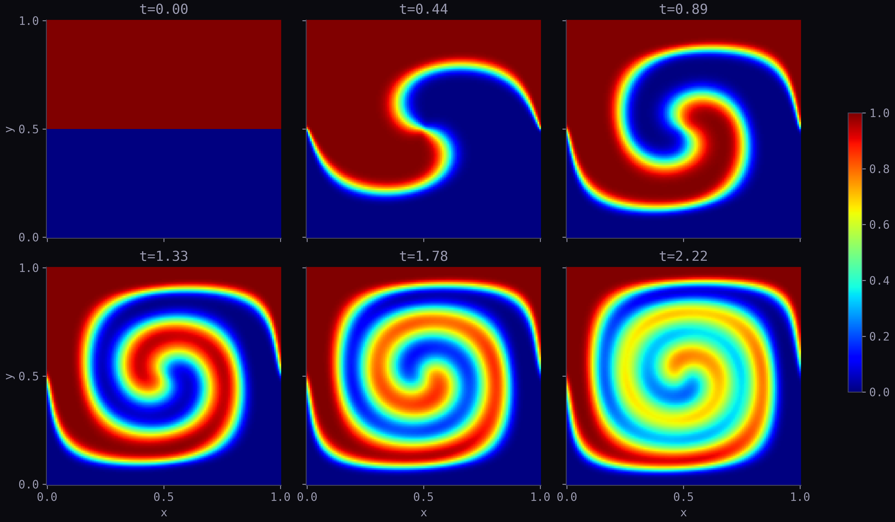
$\dfrac{\partial c_A}{\partial t} = D_A \dfrac{\partial^2 c_A}{\partial x^2} - k_1 c_A c_B$
$\dfrac{\partial c_B}{\partial t} = D_B \dfrac{\partial^2 c_B}{\partial x^2} - k_1 c_A c_B$
$\dfrac{\partial c_C}{\partial t} = D_C \dfrac{\partial^2 c_C}{\partial x^2} + k_1 c_A c_B$
DA, DB, DC = 20e-4, 10e-4, 5e-4; k1 = 100.0 def src_AB(x, cA, cB, cC): return -k1 * cA * cB def src_C (x, cA, cB, cC): return +k1 * cA * cB eqA = PDE('cA', x=x); eqA.add_diffusion(DA); eqA.add_source(src_AB) eqB = PDE('cB', x=x); eqB.add_diffusion(DB); eqB.add_source(src_AB) eqC = PDE('cC', x=x); eqC.add_diffusion(DC); eqC.add_source(src_C)
eqA.set_ic(gaussian(x)); eqB.set_ic(1.0); eqC.set_ic(0.0) eqA.set_bc(side=['left','right'], kind='dirichlet', value=[5.0,0.0]) eqB.set_bc(side=['left','right'], kind='dirichlet', value=[0.0,3.0])
sys = PDESystem([eqA, eqB, eqC]) sol = sys.solve(t_span=(0, 100), method='BDF')
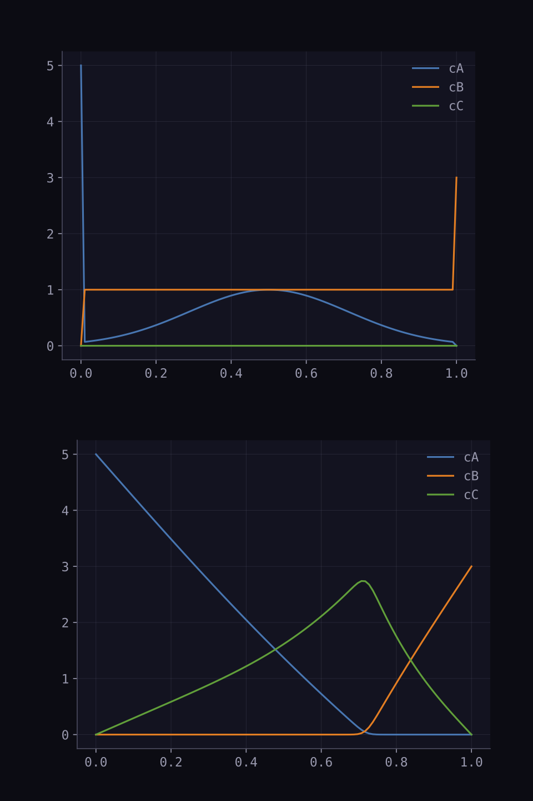
eq = PDE('u', y) eq.add_diffusion(diffusivity=nu)
eq.set_bc(side='left', kind='dirichlet', value=lambda t: U0 * np.cos(omega * t)) eq.set_bc(side='right', kind='dirichlet', value=0.0) eq.set_ic(0.0)
T = 2*np.pi / omega # one period sol = eq.solve(t_span=(0, 4*T), method='BDF')
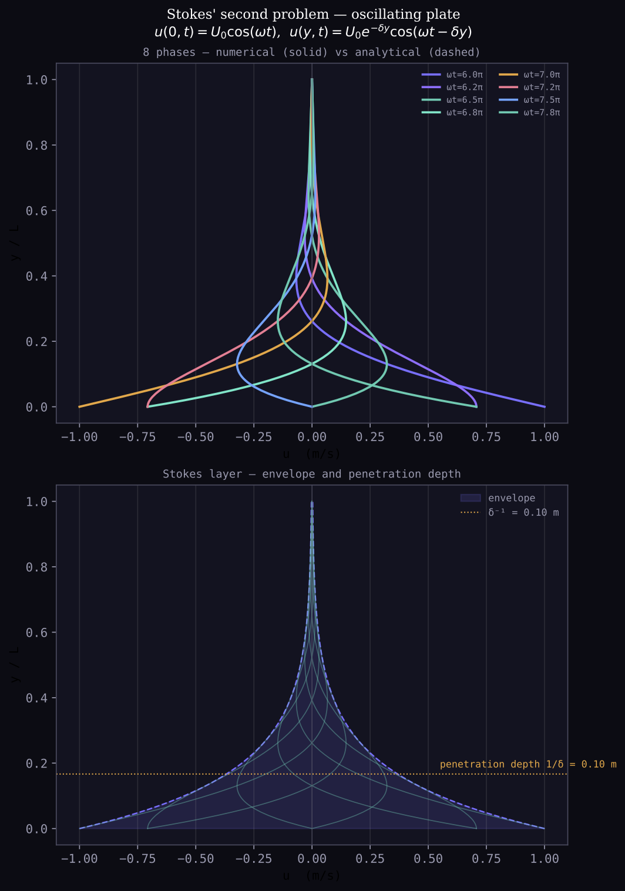
Stream-function formulation. Cylinder enforced as an interior Dirichlet constraint ($\psi = y_c$ on cylinder surface).
eq = PDE('psi', x=x, y=y) eq.add_diffusion(diffusivity=1.0)
cylinder = (X-cx)**2 + (Y-cy)**2 <= R**2 eq.set_bc(side=['bottom','top'], kind='dirichlet', value=[0.0,3.0]) eq.set_bc(side=['left','right'], kind='neumann', value=0.0) eq.set_interior_bc(mask=cylinder, kind='dirichlet', value=cy) eq.set_ic(0)
sol = eq.solve_steady()
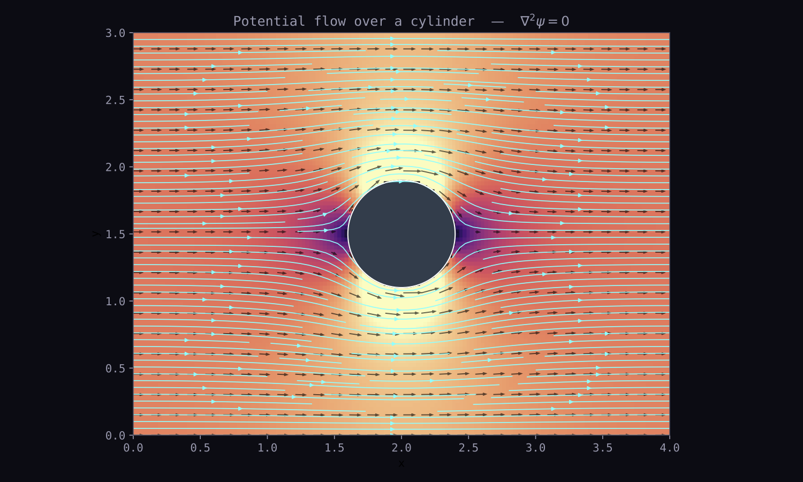
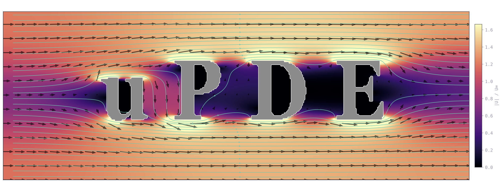
Log-normal random permeability field. High-contrast $K$ produces channeling and preferential flow paths.
# random log-normal permeability log_K = gaussian_filter(np.random.randn(nx,ny), sigma=12) K = np.exp(3 * log_K / log_K.std()) eq = PDE('p', x=x, y=y) eq.add_diffusion(diffusivity=K)
eq.set_bc(side='all', kind='neumann', value=0.0) eq.set_bc(side=['left','right'], kind='dirichlet', value=[1.0, 0.0])
sol = eq.solve_steady()
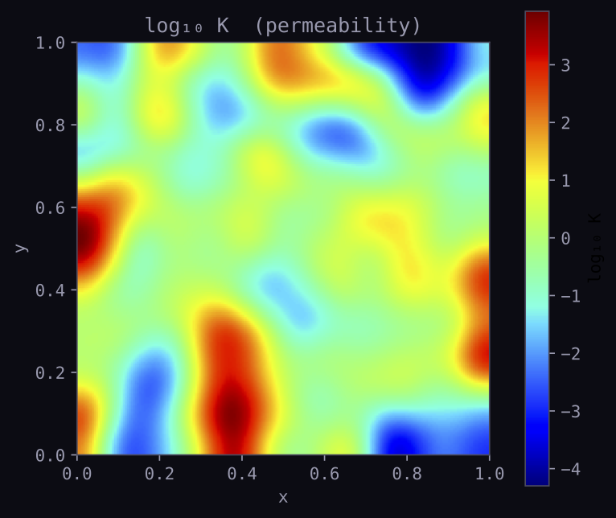
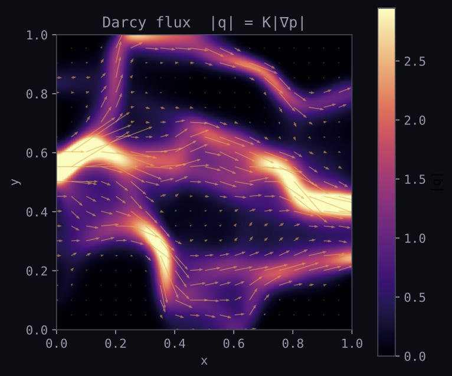
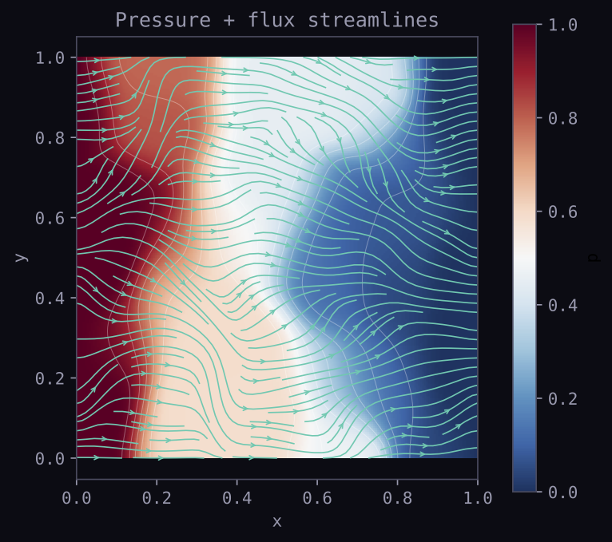
$\nabla \cdot (\varepsilon_r\nabla V_r) - \nabla \cdot (\varepsilon_i\nabla V_i) = 0$
$\nabla \cdot (\varepsilon_r\nabla V_i) + \nabla \cdot (\varepsilon_i\nabla V_r) = 0$
Split into coupled real/imaginary PDEs. The U logo acts as a lossy dielectric inclusion ($\varepsilon_c = 1.5 - 3j$).
eq_r = PDE("Vr", x=x, y=y) eq_r.add_diffusion(diffusivity=eps_r) eq_r.add_term(lambda Vi, Div_flux_x, Div_flux_y: -Div_flux_x(eps_i,Vi) - Div_flux_y(eps_i,Vi)) eq_i = PDE("Vi", x=x, y=y) eq_i.add_diffusion(diffusivity=eps_r) eq_i.add_term(lambda Vr, Div_flux_x, Div_flux_y: Div_flux_x(eps_i,Vr) + Div_flux_y(eps_i,Vr))
sol = PDESystem([eq_r, eq_i]).solve_steady(method="linear")
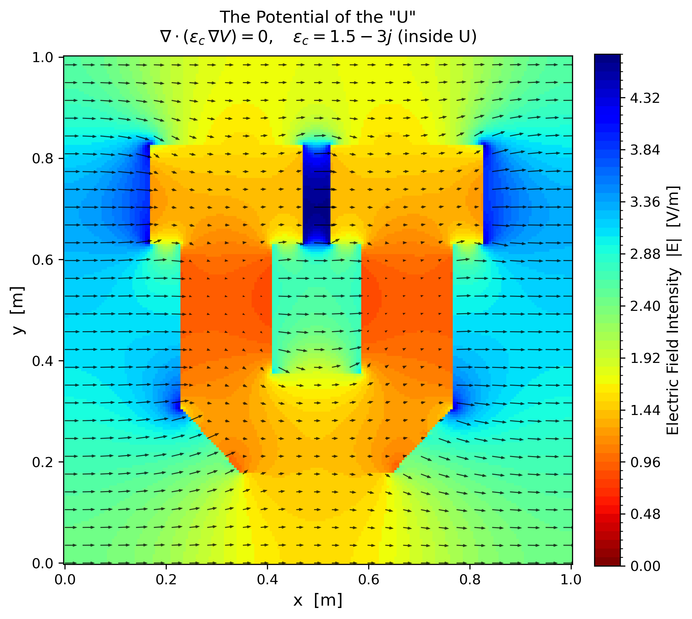
Dedicated MixtureFraction equation factory. Tabulated flamelet chemistry via Burke–Schumann or Cantera.
from upde import MixtureFraction eq = MixtureFraction('Z', x=x, y=y, velocity_x=u_field, velocity_y=0.0, diffusivity=D)
eq.set_bc(mask=jet_mask_left, kind='dirichlet', value=1.0) # fuel eq.set_bc(mask=coflow_mask_left, kind='dirichlet', value=0.0) # air eq.set_bc(side='right', kind='neumann', value=0.0) eq.set_ic(0.0)
sol = eq.solve(t_span=(0, 20)) table = FlameletTable.burke_schumann(Z_st=0.055, ...) T_final = table.T(sol.Z[:,:,-1]) Y_CH4 = table.Y('CH4', sol.Z[:,:,-1])
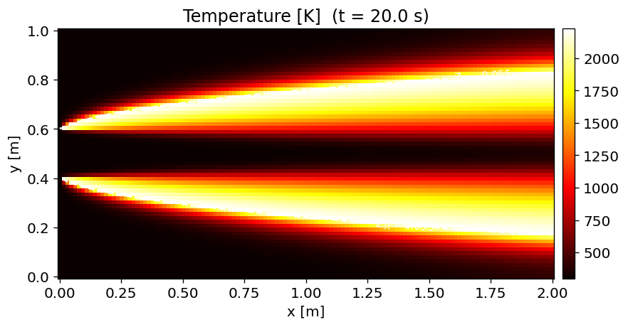
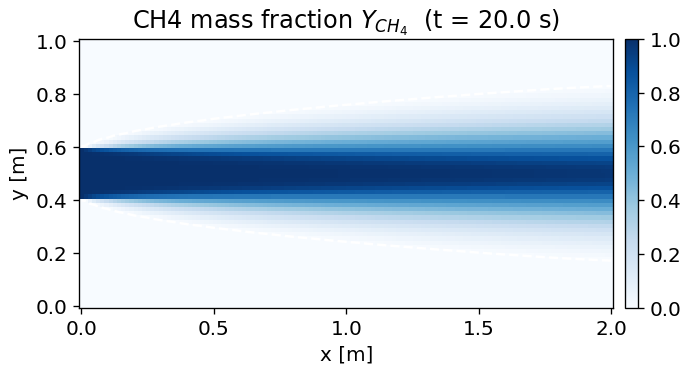
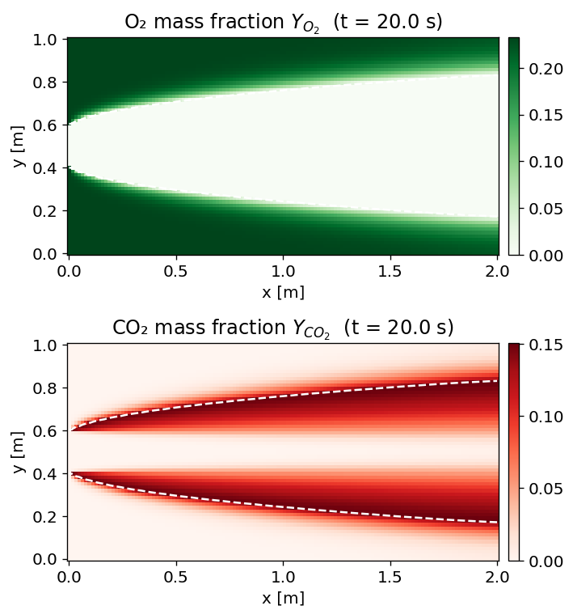
Reduced to first-order system:
$\dfrac{\partial u}{\partial t} = u^t, \qquad \dfrac{\partial u^t}{\partial t} = c^2\nabla^2 u$
from upde import WaveEquation weq = WaveEquation('u', 'ut', x=x, y=y, speed=1.0)
u0 = np.exp(-((X-cx)**2 + (Y-cy)**2) / (2*sig**2)) weq.u.set_ic(u0); weq.ut.set_ic(0.0) # reflecting walls weq.u.set_bc( side='all', kind='dirichlet', value=0.0) weq.ut.set_bc(side='all', kind='dirichlet', value=0.0)
sol = weq.solve(t_span=(0, 3))
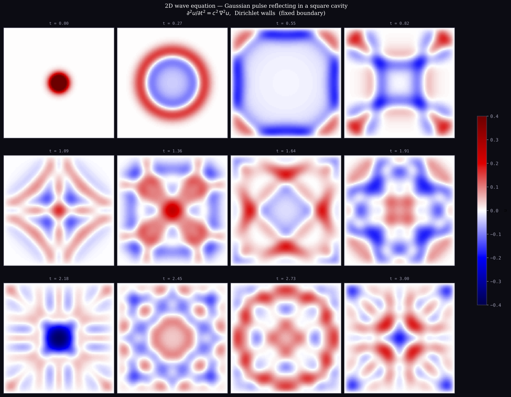
$\dfrac{\partial u}{\partial t} + u\dfrac{\partial u}{\partial x} + v\dfrac{\partial u}{\partial y} = -\dfrac{1}{\rho}\dfrac{\partial p}{\partial x} + \nu\left(\dfrac{\partial^2 u}{\partial x^2}+\dfrac{\partial^2 u}{\partial y^2}\right)$
$\dfrac{\partial v}{\partial t} + u\dfrac{\partial v}{\partial x} + v\dfrac{\partial v}{\partial y} = -\dfrac{1}{\rho}\dfrac{\partial p}{\partial y} + \nu\left(\dfrac{\partial^2 v}{\partial x^2}+\dfrac{\partial^2 v}{\partial y^2}\right)$
$\dfrac{\partial p}{\partial t} = -\beta\left(\dfrac{\partial u}{\partial x}+\dfrac{\partial v}{\partial y}\right) + \varepsilon\nabla^2 p$
Artificial compressibility method. Pressure equation drives divergence to zero.
from upde import NavierStokes2D ns = NavierStokes2D('u','v','p', x=x, y=y, nu=0.01, rho=1.0, beta=0.7)
ns.u.set_bc(side=['bottom','top'], kind='dirichlet', value=0.0) ns.u.set_bc(side='left', kind='dirichlet', value=1.3) mask = (x[:,None]-cx)**2 + (y[None,:]-cy)**2 <= 0.5**2 ns.u.set_interior_bc(mask=mask, kind='dirichlet', value=0.0) ns.v.set_interior_bc(mask=mask, kind='dirichlet', value=0.0)
sol = ns.solve(t_span=(0, 10))
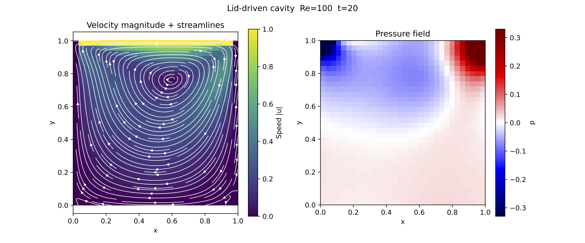
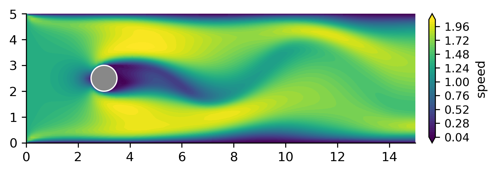